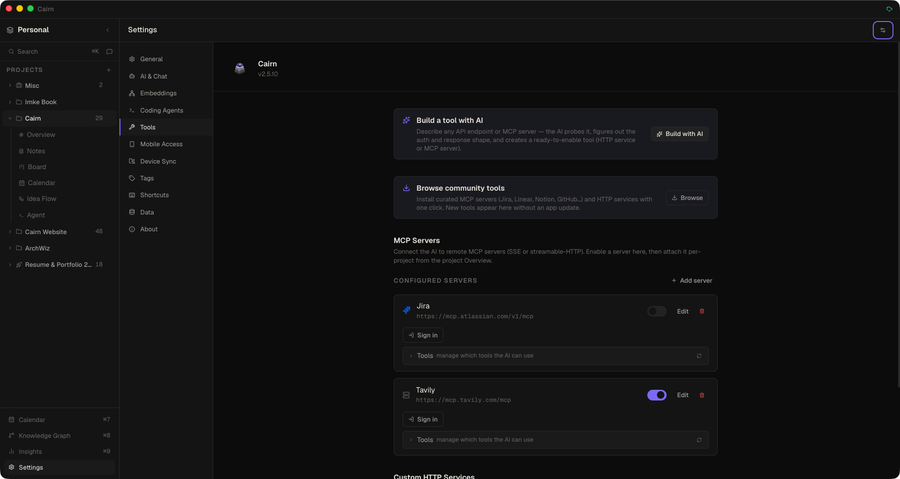
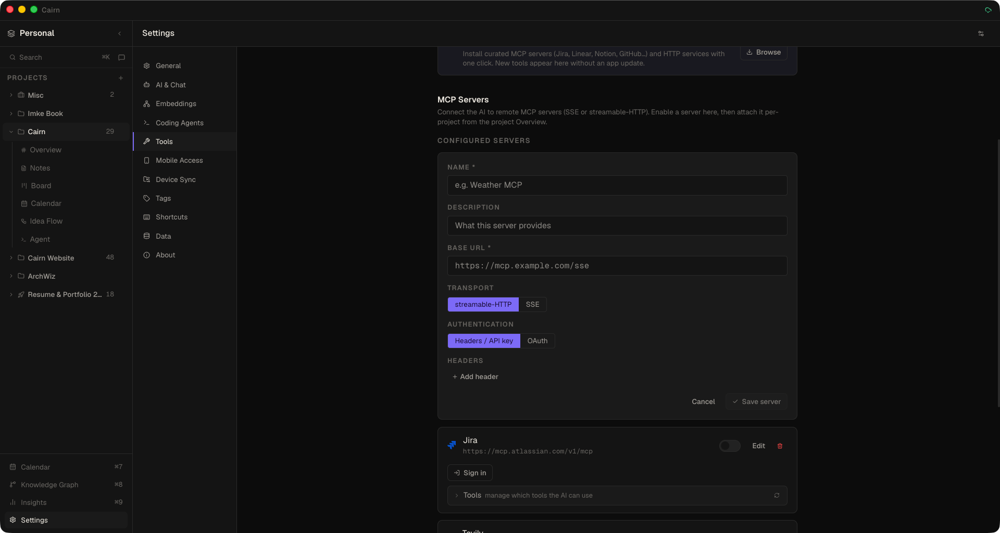
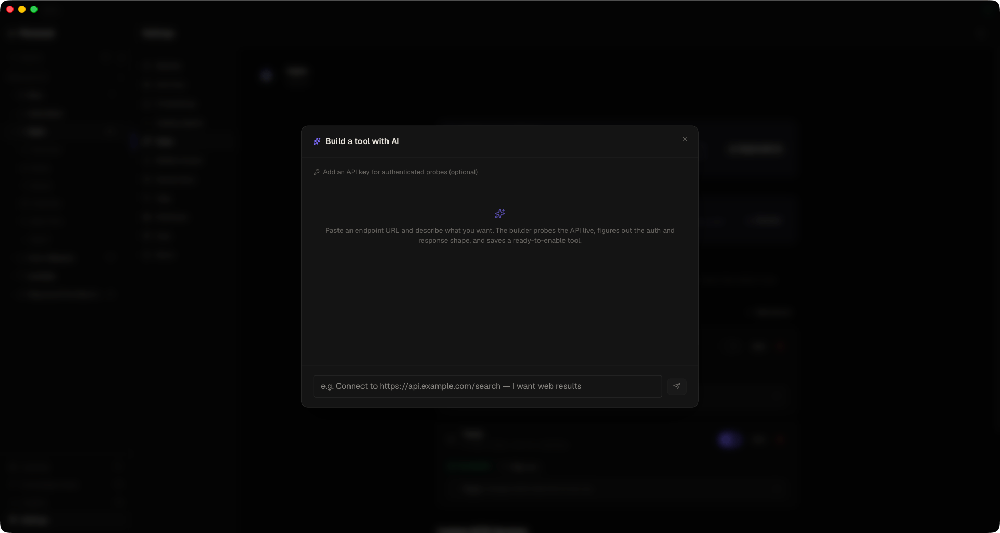
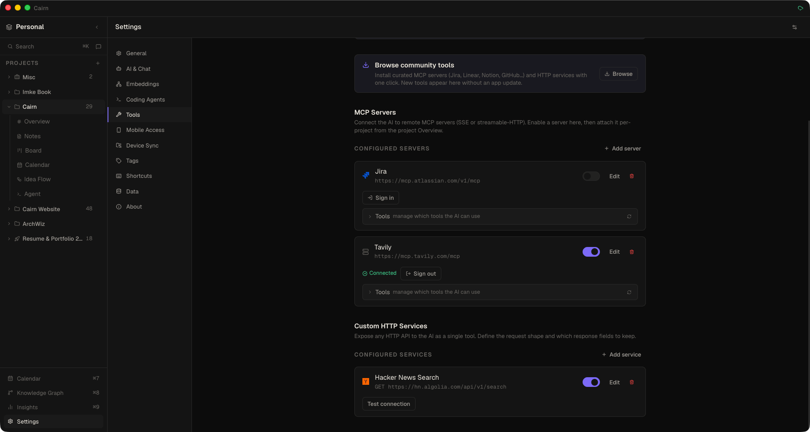
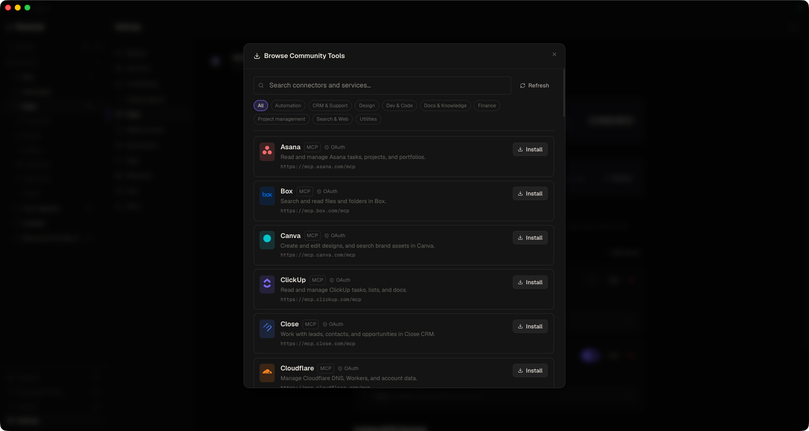
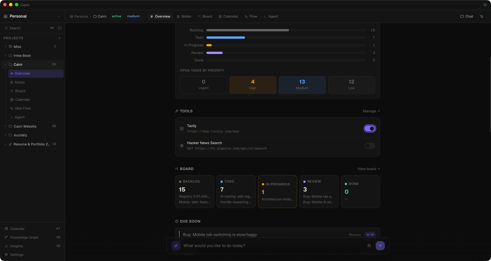

External Tools MCP Client
Give Cairn's AI chat and coding agent access to the outside world. Connect remote MCP servers, expose any HTTP API as a tool, sign in to OAuth-protected services, or install a ready-made connector from the community registry — then scope each tool to just the projects that need it.
This page is about Cairn acting as an MCP client, reaching out to tools you connect. If you instead want to expose your Cairn workspace to Claude Desktop, Cursor, or OpenCode, that's the built-in MCP Server — the reverse direction.
Where it lives
Everything is configured in Settings → Tools. There are two kinds of tool, plus two shortcuts to add them fast:
- MCP Servers — remote Model Context Protocol servers, over SSE or streamable-HTTP.
- Custom HTTP Services — any REST endpoint, exposed to the AI as a single tool (or several).
- Build a tool with AI — describe an endpoint in plain English and let Cairn build the tool for you.
- Browse community tools — one-click install from a curated connector registry.
Every tool has a per-row enable toggle and a Test connection button. Enabled tools become available to both the AI chat and the coding agent, and show up mid-conversation with friendly labels (e.g. Canva · Search designs) rather than raw internal ids.

Adding a remote MCP server
- Open Settings → Tools and click Add server under MCP Servers
- Give it a name and the server URL
- Pick the transport — streamable-HTTP or SSE (Cairn can infer this from the URL; a URL ending in
/sseis treated as SSE, otherwise streamable-HTTP) - Choose the authentication mode: none, header / API key, or OAuth
- Click Test connection, then flip the enable toggle
Remote transports only. External MCP servers connect over the two HTTP-based transports (SSE and streamable-HTTP). Local stdio child-process servers are not launched by this feature — a remote server is a network endpoint.
Per-tool enable / disable
Expand any connected MCP server and Cairn fetches its individual tools live, each with its description. Switch off the ones you don't want — they're hidden from the AI everywhere that server is used, and blocked at execution time as a backstop. Because disabled tools are dropped from the definitions sent to the model, they also stop counting toward your context-window usage (visible in the chat token ring). The selection is stored per server, workspace-wide, and applies to both chat and the agent.

Custom HTTP services
Expose any HTTP API to the AI as a single tool. Click Add service under Custom HTTP Services and provide:
- Name and description (what the tool does — the AI reads this)
- Method (GET / POST / PUT / DELETE) and the API URL
- Authentication — header / API key, or OAuth
- Tool definition (JSON) — an OpenAI-style function schema (
name,description,parameters) - Response keys — an optional comma-separated allowlist; only those keys are kept from the response to save tokens. Leave empty to return everything.
Arguments are coerced to the JSON types declared in the tool definition before the request is sent, so a model emitting "10" instead of 10 won't trip a strict API. Test connection synthesises a realistic request from your parameter schema (filling required fields) rather than sending an empty body.
Multi-operation services
A single service can expose several related operations — each becomes its own tool — that share one base URL, headers, and credential. Operations support URL path templates like /repos/{owner}/{repo}/issues/{number} with per-argument placement (path, query, or JSON body), so one connector can cover a real multi-endpoint API without re-entering a key for each call.
AI Tool Builder — "Build with AI"
Don't want to hand-write a JSON schema? Click Build a tool with AI, describe an API endpoint (or an MCP server) in plain English, and Cairn does the rest:
- Probes the endpoint live in the background process, reads a capped sample of the response, and extracts its JSON keys
- Infers the auth scheme from the status code (401 / 402 / 403), the
WWW-Authenticateheader, and the body — bearer, API key, basic, or query - Trims the response to just the useful fields, reporting the token savings, and drops noisy keys
- Saves a ready-to-review tool — disabled by default, so you can check it before enabling
If the endpoint needs a credential even for a first request, you can supply an API key (with a configurable header name, defaulting to x-api-key) right in the modal. That key is used only to authenticate the probe during that session — the AI never sees it (it writes an <API_KEY> placeholder), and the real key is moved into your OS keychain when the tool is saved.

OAuth sign-in
MCP servers and HTTP services that gate access behind a sign-in page — Canva, Figma, Linear, Notion, GitHub, and more — are fully supported. Choose OAuth as the authentication mode, save, then click Sign in:
- Cairn opens your browser to the provider's authorization page
- You approve access
- You're redirected back and the tool shows a Connected state
Sign-in uses an RFC 8252 loopback redirect (http://127.0.0.1:<port>/callback) by default — an ephemeral, one-shot listener bound only to localhost that serves a "Signed in to Cairn" page and self-destructs. If a provider can't use loopback, Cairn falls back to a cairn://oauth/callback deep link, so services that reject custom URI schemes at the authorize step still work.
The full OAuth 2.1 flow — authorization-server discovery, dynamic client registration, PKCE, token exchange, and automatic refresh — is handled by the MCP SDK. A Connected / Sign out control shows each tool's state; a sign-in you never complete offers a Cancel button and times out on its own after 10 minutes.

Custom HTTP services aren't limited to static API keys — a service can use the same OAuth 2.1 flow. Sign in once and Cairn refreshes the access token automatically and injects Authorization: Bearer <token> on every request. That's what makes token-expiring APIs like Gmail or Microsoft Graph usable without pasting a fresh token every hour.
Browse community tools
The Browse button opens a curated connector catalog pulled from the cairn-community registry. A search box and category chips — Project management, Dev & Code, Docs & Knowledge, CRM & Support, Search & Web, Finance, Design, Automation, Utilities — help you find:
- MCP servers — Jira, Linear, Notion, GitHub, monday, Sentry, Asana, Stripe, HubSpot, Canva, Cloudflare, Vercel, Tavily…
- HTTP services — weather, web search, and more
Each connector shows its brand logo and the exact endpoint before you install. One click installs it disabled, for review: connectors needing an API key prompt for it (stored in the OS keychain), and OAuth connectors install ready to Connect. Installed items show an Update button when the registry ships a newer version. Because logos and connectors come from the registry itself, new ones appear without updating the app.
Opens the same cairn-community registry the app reads — right here, live in your browser.

Per-project attach
Enabling a tool in Settings makes it available; attaching it decides where it's used. Open a project's Overview → Tools panel to toggle which workspace tools that project sees. Only tools you've enabled in Settings appear here — a tool disabled in Settings is never attachable.
A tool is exposed to a project's chat / agent loop when its own config is enabled and an attachment enables it — either globally (on everywhere) or for that specific project. This keeps each project's tool list focused, which also keeps prompt tokens down.

Credential security
API keys and OAuth tokens for external tools are stored in your operating system's keychain — macOS Keychain, Windows DPAPI, or Linux libsecret — via Electron safeStorage. They are never written to the database or to plain text.
- The tool's saved config holds only a reference token (e.g.
secret://mcp:<id>/Authorization) — never the real value. - The app can only learn whether a secret is set, never read it back. Decryption happens exclusively in the background process, at the moment a request is made.
- The AI model never receives a credential — during tool-building it only ever sees placeholders like
<API_KEY>. - OAuth artefacts (access & refresh tokens, dynamic client registration, the PKCE verifier) live in the same keychain and are never exposed to the renderer.
Every enabled, attached tool is available to both the AI chat and the coding agent — the same connection, the same credentials. Configure a connector once and it works wherever the AI runs.
Result chips you can click
When the assistant calls an external tool, Cairn pulls the most useful link out of the response and shows it as a chip you can click — the Confluence page, the search hit, the pull request. It recognises the common shapes REST APIs use for links and titles automatically (no per-connector configuration) and only ever opens http(s) links. A tool that fails shows a red ✗ chip with the reason on hover, so success and failure never look the same.